Principio de funcionamiento, magnitud por magnitud
Material de ampliación
Este catálogo explica cómo funciona cada sensor y para qué se usa. No hace falta memorizarlo: en un problema de control lo que se pide es identificar qué magnitud se está midiendo y qué elemento del lazo es el sensor. Úsalo cuando tengas que elegir un sensor para un montaje o cuando quieras entender por qué una medida se hace de una manera y no de otra.
Posición y proximidad
Final de carrera
Son dispositivos electrónicos, neumáticos o mecánicos situados al final del recorrido o de un elemento móvil, como por ejemplo una cinta transportadora, con el objetivo de enviar señales que puedan modificar el estado de un circuito.
Internamente pueden contener interruptores normalmente abiertos (NA), interruptores normalmente cerrados (NC) o conmutadores dependiendo de la operación que cumplan al ser accionados. Además, externamente puede variar el elemento que se utiliza para hacer contacto, de ahí la gran variedad de finales de carrera que existen en mercado.
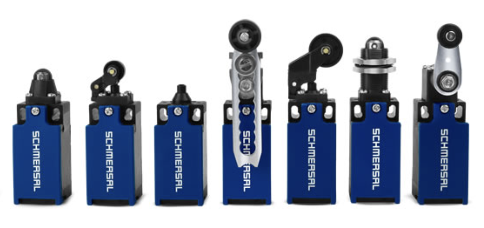
Podemos imaginar un final de carrera como un interruptor (o conmutador) que es accionado por algún elemento móvil al llegar al límite de su movimiento, en vez de accionarlo nosotros manualmente.
Sensores inductivos y capacitivos
Estos sensores pueden detectar la presencia de objetos sin necesidad de tener contacto físico con ellos, como ocurría con los finales de carrera.
Físicamente, estos sensores son similares. Aquí tienes una imagen de un sensor inductivo comercial:
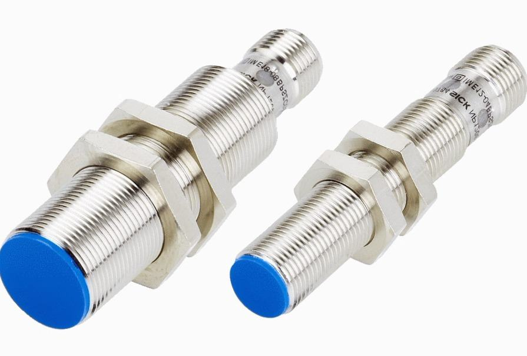
Y aquí tienes una imagen de un sensor capacitivo:
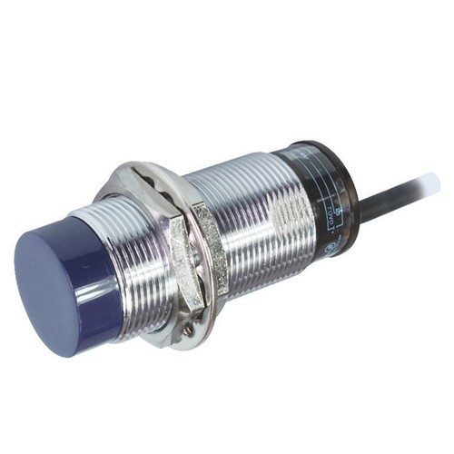
Inductivos
Son una clase especial de sensores que sirve para detectar materiales metálicos, en especial ferromagnéticos.
Estos sensores contienen un devanado (bobina) interno. Cuando una corriente circula por el mismo, se genera un campo magnético. Cuando se acerca un metal al campo magnético generado por el sensor de proximidad, se inducen corrientes de Foucault en él. Estas corrientes, a su vez, generan un campo magnético que se opone al de la bobina del sensor, causando una reducción en la inductancia de la misma. Esta reducción en la inductancia de la bobina interna del sensor trae aparejado una disminución en la impedancia de esta, lo que puede detectarse fácilmente mediante un circuito eléctrico.
Son muy usados en la industria (por ejemplo, en las fábricas de automóviles, ya que la mayoría de sus piezas son metálicas).
Capacitivos
Los sensores capacitivos tienen la ventaja sobre los inductivos de que pueden detectar cualquier tipo de material, no solo materiales metálicos. También son muy usados para detectar el nivel de un líquido en un recipiente.
Se basa en la variación del campo eléctrico entre las placas de un condensador, al cambiar su capacidad. Dicho condensador está formado por un electrodo interno (parte del propio sensor) y otro externo (constituido por una pieza conectada a masa).
La capacidad de un condensador puede cambiar por la distancia entre sus placas, o al modificar el material dieléctrico que está entre ellas. Por ello, hay dos tipos básicos de configuración de estos sensores:
- En algunas aplicaciones el electrodo externo es el propio objeto a detectar, previamente conectado a masa; entonces la capacidad en cuestión variará en función de la distancia que hay entre el sensor y el objeto.
- En otras aplicaciones el electrodo externo es una masa fija y, entonces, el cuerpo a detectar se utiliza como dieléctrico que se introduce entre la masa y la placa activa, modificando así las características del condensador equivalente.
En este vídeo tienes más información de estos tipos de detectores:
Vídeo alojado en YouTube: requiere conexión a internet.
Sensor fotoeléctrico
Estos sensores requieren de un componente emisor que genera la luz, normalmente en frecuencia infrarroja para que no sea visible, y un componente receptor que percibe la luz generada por el emisor. Este receptor puede ser, por ejemplo una resistencia dependiente de la luz (LDR), que veremos con más detalle en los sensores de luminosidad.
Existen tres tipos distintos de fotocélulas, según se realice la detección:
- Barrera de luz: están compuestas de dos partes, el componente que emite el haz de luz y el que lo recibe están situados uno en frente del otro. Se establece un área de detección donde el objeto a detectar es reconocido cuando interrumpe el haz de luz. Debido a que el modo de operación de esta clase de sensores se basa en la interrupción del haz de luz, la detección no se ve afectada por el color, la textura o el brillo del objeto a detectar. Estos sensores operan de una manera precisa cuando el emisor y el receptor se encuentran alineados.
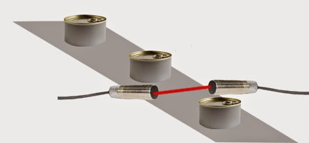
- Reflexión sobre espejo: tienen el componente emisor y el componente receptor en un solo cuerpo, lo que lo hace mucho más sencillo de instalar que las de barrera de luz. El haz de luz se establece mediante la utilización de un reflector catadióptrico. El objeto es detectado cuando el haz formado entre el componente emisor, el reflector y el componente receptor es interrumpido. Debido a esto, la detección no es afectada por el color del mismo.
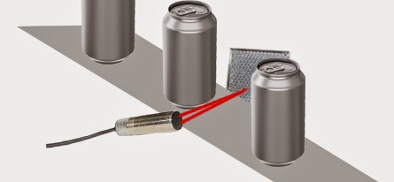
- Reflexión sobre objeto: la luz infrarroja viaja en línea recta, en el momento en que un objeto se interpone el haz de luz rebota contra este y cambia de dirección, permitiendo que la luz sea enviada al receptor y el elemento sea detectado. Un objeto de color negro no es detectado ya que absorbe toda la luz y el sensor no experimenta cambios. Hay dos tipos de fotocélulas de reflexión sobre objeto, las de reflexión difusa y las de reflexión definida:
- Reflexión difusa: el emisor lanza un haz de luz; los rayos del haz se pierden en el espacio si no hay objeto, pero cuando hay presencia de objeto, la superficie de este produce una reflexión difusa de la luz (los rayos salen sin una trayectoria determinada), parte de la cual incide sobre el receptor y se cambia así la señal de salida de la fotocélula.
- Reflexión definida: la reflexión en la superficie del objeto a detectar por las fotocélulas de reflexión definida normalmente es también de carácter difuso, como en los sensores de reflexión difusa. La diferencia está en que en las fotocélulas de reflexión definida la fuente de luz está a una distancia mayor que la distancia focal, por lo que el haz converge a un punto del eje óptico.
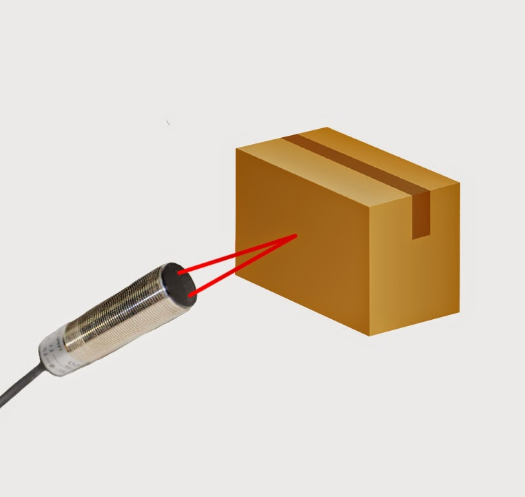
Sensor de ultrasonidos
Utiliza ondas acústicas de alta frecuencia (para que sean inaudibles por los humanos) y mide el tiempo que tarda la onda en regresar para calcular al distancia a un objeto. Consta de dos partes: un altavoz emisor (que emite la señal) y un micrófono receptor (que recibe al señal si ésta rebota sobre algún obstáculo cercano).
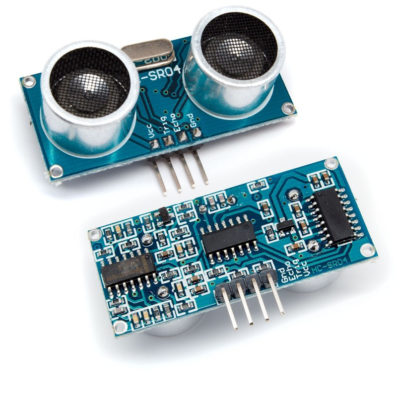
Sus principales ventajas frente a los sensores ópticos son:- Detección de objetos transparentes: dado que las ondas ultrasónicas pueden reflejarse en una superficie de vidrio o líquido, y retornar al cabezal, incluso los objetos transparentes pueden ser detectados.
- Resistencia a niebla y suciedad: la detección no se ve afectada por la acumulación de polvo o suciedad.
- Detección de objetos de forma compleja: la detección de presencia es estable, incluso para objetos tales como bandejas de malla o resortes, que pueden verse atravesados por los rayos infrarrojos a través de sus orificios.
Elemento que refleja la luz de vuelta hacia la fuente, no importando el ángulo de incidencia. Este comportamiento no equivale al de un espejo, ya que este último únicamente refleja los rayos de luz en la dirección de incidencia cuando ésta es perpendicular a la superficie (el ángulo de incidencia es 0).
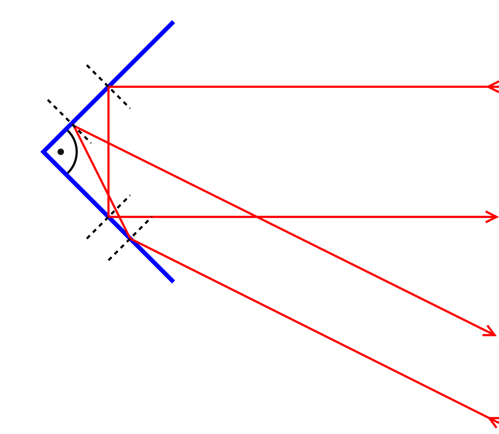
Luminosidad
Fotodiodo
Un fotodiodo es un semiconductor construido con una unión PN, sensible a la incidencia de la luz visible o infrarroja.
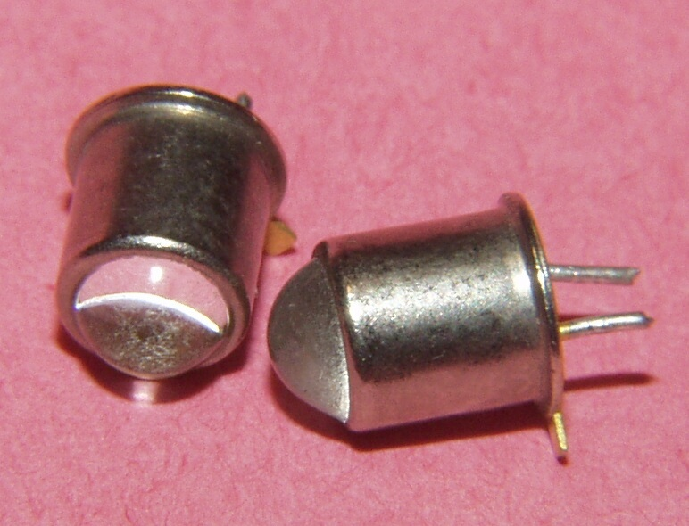 |
Para que su funcionamiento sea correcto se polariza inversamente, con lo que se producirá una cierta circulación de corriente solo cuando sea excitado por la luz. Debido a su construcción, los fotodiodos se comportan como células fotovoltaicas, es decir, iluminados en ausencia de una fuente exterior de energía generan una corriente muy pequeña con el positivo en el ánodo y el negativo en el cátodo.
Los fotodiodos se utilizan en sensores científicos e industriales para medir la intensidad de la luz, ya sea por sí misma o como medida de alguna otra propiedad que la interfiera (densidad del humo, por ejemplo).
Fotorresistencia (LDR)
Es un componente electrónico cuya resistencia se modifica (normalmente disminuye) con el aumento de intensidad de luz incidente. Puede también ser llamado fotoconductor, célula fotoeléctrica o resistor dependiente de la luz, cuyas siglas, LDR, se originan de su nombre en inglés light-dependent resistor.
Su cuerpo está formado por una célula fotorreceptora y dos patillas:
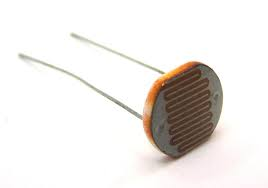
Su símbolo eléctrico es el siguiente:
Fototransistor
Es un transistor que permite el paso de corriente del colector al emisor, cuando recibe luz en su base.
En el fototransistor, la luz actúa como corriente de base. Las patillas que se usan son el colector y el emisor, por lo que es habitual encontrarlo encapsulado solo con esos dos terminales, sin terminal de base, aunque también pueden encontrarse con el terminal de base accesible por si se quiere utilizar también como transistor convencional.
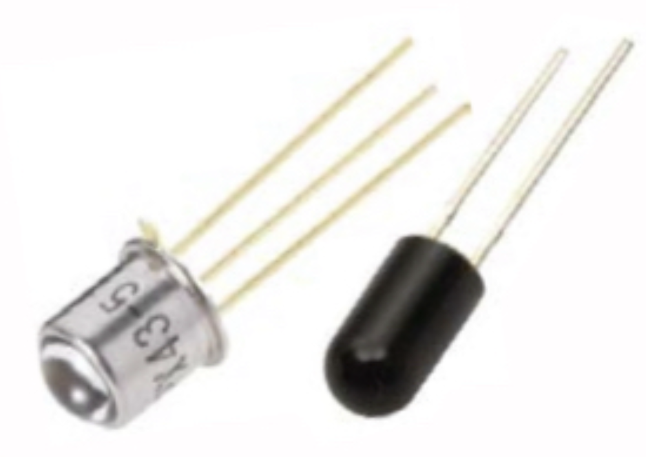
Cuando utilizamos uno de tres patillas como fototransistor, normalmente se deja la base sin conectar.
Su símbolo eléctrico es este:
Temperatura
Termistor (NTC, PTC)
Un termistor es un tipo de resistencia cuyo valor varía en función de la temperatura de una forma más acusada que una resistencia común. Su funcionamiento se basa en la variación de la resistividad que presenta un semiconductor con la temperatura.
Existen dos tipos fundamentales de termistores: NTC y PTC.
- NTC: tienen un coeficiente de temperatura negativo (en inglés Negative Temperature Coefficient o NTC). Estos termistores disminuyen su resistencia a medida que aumenta la temperatura.
- PTC: tienen un coeficiente de temperatura positivo (en inglés Positive Temperature Coefficient o PTC). Estos incrementan su resistencia a medida que aumenta la temperatura.
Aquí puedes ver sus símbolos eléctricos y cómo varían su resistencia con la temperatura cada uno de los dos tipos:
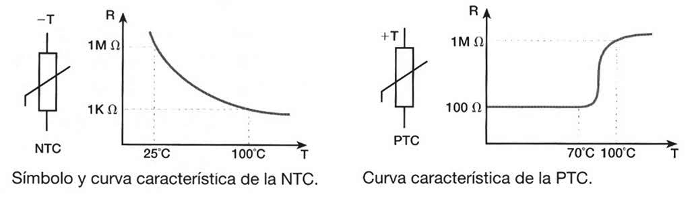
Termopar
Un termopar es un transductor formado por la unión de dos metales distintos que produce una diferencia de potencial muy pequeña (del orden de los milivoltios) que es función de la diferencia de temperatura entre uno de los extremos (denominado "punto caliente" o "de medida") y el otro (llamado "punto frío" o "de referencia")
Su funcionamiento se basa en el fenómeno físico llamado "efecto Seebeck": si se unen dos metales por un extremo y se calienta la unión, se produce una diferencia de potencial entre los extremos libres que es proporcional a la diferencia de temperaturas.
Normalmente los termopares industriales están compuestos por un tubo de acero inoxidable u otro material. En un extremo del tubo está la unión, y en el otro el terminal eléctrico de los cables, protegido dentro de una caja redonda de aluminio (cabezal).
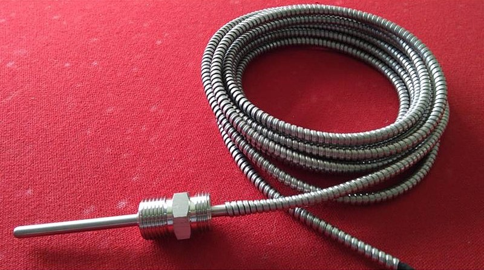
En instrumentación industrial, los termopares son usados como sensores de temperatura. Son económicos, intercambiables, tienen conectores estándar y son capaces de medir un amplio rango de temperaturas. Su principal limitación está en la exactitud, pues es fácil obtener errores del sistema cuando se trabaja con precisiones inferiores a un grado Celsius.
A veces se conecta un grupo de termopares en serie para sumar sus voltajes y obtener una mayor respuesta. Este motaje recibe el nombre de termopila.
Detector de temperatura resistivo (RTD)
Un RTD (del inglés: resistance temperature detector) es un detector de temperatura resistivo, es decir, un sensor de temperatura basado en la variación de la resistencia de un conductor con la temperatura. En ese sentido, sería como un termistor PTC (pues aumenta su resistencia con la temperatura), pero existen algunas diferencias importantes:
- La variación de la resistencia con la temperatura de un RTD es prácticamente lineal, mientras que en una PTC la curva de variación no es recta.
- Los RTD pueden medir temperaturas de hasta 600 ºC, mientras que los termistores no suelen pasar de unos 130 ºC.
- Los RTD suelen ser más caros que los termistores convencionales (aunque hay algunos termistores especiales, aptos para mayores rangos de temperaturas, que terminan siendo más caros que las RTD)
- Si bien los mejores RTD presentan una precisión similar a la de los termistores, los RTD aumentan la resistencia del sistema. El uso de cables largos puede alterar las lecturas, disminuyendo la precisión de los RTD.
El símbolo eléctrico de un RTD es parecido al de un termistor, indicando una variación lineal con coeficiente de temperatura positivo:
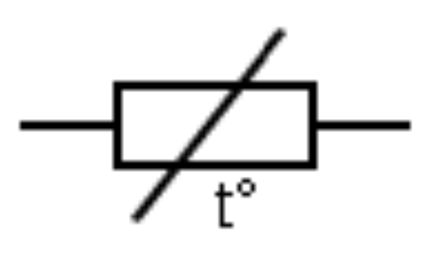
Humedad
Detector de humedad del suelo
Miden la cantidad de humedad que hay en un terreno, por lo que son ampliamente utilizados en sistemas de riego automático que deben mantener la humedad en un rango determinado dependiendo del cultivo.
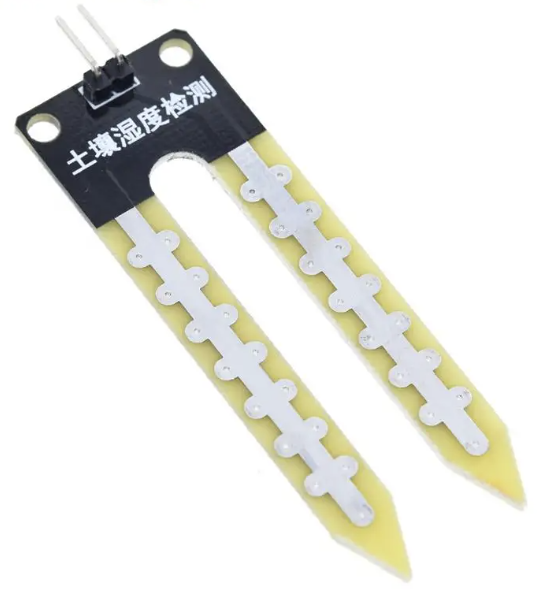
Para medir la humedad del suelo, detectan cambios en las propiedades eléctricas del terreno, que varían sensiblemente con la humedad. Las técnicas más empleadas son estas:
- Técnica de sensor de resistividad del suelo: mientras menos humedad esté presente en un suelo, su resistencia eléctrica aumenta, por ello este tipo de dispositivos son muy prácticos a la hora de determinar la cantidad de agua que hace falta aplicar en un suelo determinado o un área en específico. Se utilizan unos sensores entre los que se aplica un voltaje y se mide la corriente que circula entre ellos, obteniéndose un valor inversamente proporcional a la resistividad del terreno (ley de Ohm).
- Técnica de reflectometría en el dominio del tiempo: se basa en la relación entre las propiedades dieléctricas del suelo y su contenido de agua, debido a la diferencia entre la constante dieléctrica del suelo seco (≈2.9) y la del agua pura (≈81). Se mide el tiempo de ida y vuelta de un pulso electromagnético que se propaga a lo largo de una guía, en forma de sonda insertada en el suelo. La velocidad del pulso es inversamente proporcional al contenido de humedad del suelo.
- Técnica de reflectometría en el dominio de la frecuencia (método capacitivo): esta técnica considera al suelo como el dieléctrico de un condensador, la constante dieléctrica del suelo varía en función de su contenido en agua, variando la capacidad del condensador. La humedad se puede calcular midiendo esta capacidad y se puede hacer de dos formas:
- Midiendo el tiempo de carga del condensador.
- Probando diferentes frecuencias hasta encontrar la frecuencia de resonancia del circuito.
Detector de temperatura ambiente y humedad relativa
Estos dispositivos, también llamados termohigrómetros, se utilizan para medir la temperatura y la humedad del aire de un determinado ambiente. Usan la temperatura de condensación (el punto de rocío), o cambios en la capacitancia o en la resistencia eléctrica para medir las diferencias de humedad.
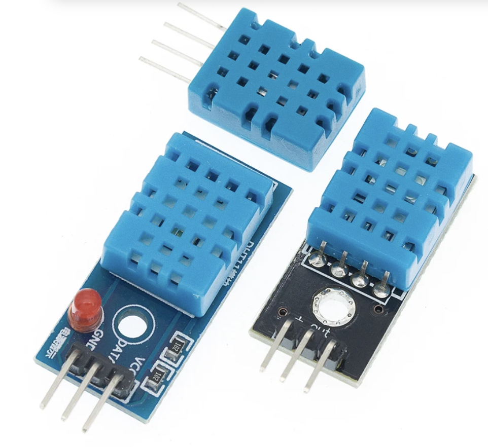
Posición lineal y angular
Potenciómetro
Un potenciómetro es un dispositivo electrónico compuesto por una resistencia interna y un cursor móvil. Tiene tres terminales en total, los de los extremos de la resistencia interna y otro más conectado al cursor móvil.
Entre los terminales de los extremos se establece una diferencia de potencial y, entre cada uno de ellos y el terminal del cursor móvil se obtiene una fracción de esa diferencia de potencial. Se utiliza, por lo tanto, como divisor de tensión o voltaje.
Como el voltaje obtenido entre un extremo y el cursor va a ser proporcional a la posición de este último, podemos usar el potenciómetro como un detector de posición. Una manera típica de utilizarlo consiste en acoplar el potenciómetro a un eje roscado, por lo que el giro del eje fijará la posición del elemento móvil, cuya posición se desea conocer:
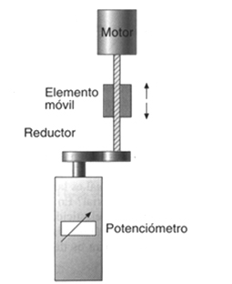
Codificador rotativo o "encoder"
Los encoders transforman la posición angular de un eje en una señal electrónica. Para generar esta señal, utilizan diferentes tipos de tecnologías, como mecánica, magnética, óptica y de resistencia. La óptica es la más común.
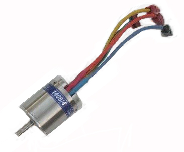
En detección óptica, el encoder está compuesto por una fuente emisora de luz (usualmente un LED), un disco giratorio y una detector de luz (usualmente un fototransistor). El disco está montado sobre un eje giratorio y dispone de secciones opacas y transparentes sobre la cara del disco. La luz que emite la fuente es recibida por el fotodetector o interrumpida por el patrón de secciones opacas produciendo como resultado señales de pulso (luz: 1, oscuridad: 0) que pueden ser leídas por un dispositivo controlador para determinar el ángulo exacto del eje.
Existen dos tipos de encoders: absolutos y relativos.
- Encoders absolutos: los códigos perforados en el disco son únicos para cada ángulo del mismo. De esa forma, para una combinación dada, podemos saber el ángulo exacto en el que se encuentra el encoder. Podemos usar cualquier código binario, aunque se suele usar el código Gray porque sólo cambia un bit entre cada una de sus posiciones consecutivas, evitando posibles imprecisiones. Si necesitamos mucha precisión, utilizar un encoder absoluto requeriría muchos "bits", por lo que el disco debería ser muy grande. Una posible solución es usar los encoders relativos.
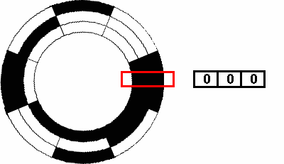
- Encoders relativos: en estos el disco es mucho más pequeño y está marcado con una gran cantidad de líneas en forma radial (como los radios de una rueda). Se genera un pulso eléctrico cada vez que una de las líneas pasa a través del haz de luz. Un circuito de control electrónico (circuito secuencial contador) cuenta los pulsos para determinar el ángulo que se ha girado. No se puede saber la posición absoluta, pero sí cuánto se ha girado desde la última vez que se midió la posición.
Sensor Hall
Un sensor de efecto Hall aprovecha, como su nombre indica, el efecto Hall, que puede producirse en un metal o en un semiconductor. Este efecto se basa en la interacción básica entre un electrón y un campo magnético. Cualquier objeto cargado eléctricamente que se mueva perpendicularmente a un campo magnético experimenta la fuerza de Lorentz. Esta fuerza es la responsable de producir la señal eléctrica que se mediría a través del cuerpo del dispositivo.
Esta “tensión Hall”, cuando se amplifica de manera adecuada, la puede leer un microcontrolador. Los sensores de efecto Hall modernos normalmente incluyen un amplificador y otros componentes electrónicos en el paquete de la unidad.
Según la manera en que se configuren, estos sensores pueden emitir una señal digital o analógica.
Velocidad
Tacómetro
El tacómetro (del griego táchos, "rapidez" y metron, "medida"), también llamado cuentarrevoluciones o cuentavueltas, es un dispositivo que mide la velocidad de giro de un eje, normalmente expresada en revoluciones por minuto (RPM).
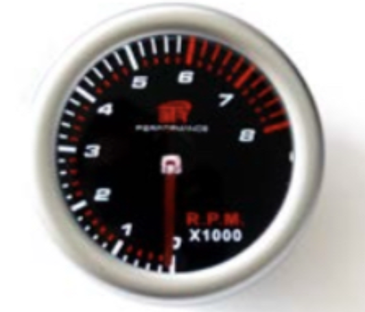
Un tacómetro básico está formado por un dial, una aguja para indicar la lectura en tiempo real y unas marcas para identificar los niveles seguros de velocidad. Los tacómetros modernos suelen ser digitales, proporcionando mayor precisión.
Tipos de tacómetros
- Tacómetro de contacto: mide directamente al estar en contacto con el eje giratorio
- Tacómetro sin contacto: utiliza métodos ópticos (láser o infrarrojos)
- Tacómetro de medición de tiempo: calcula las RPM midiendo el tiempo entre pulsos
- Tacómetro de medición de frecuencia: analiza la frecuencia de las señales generadas
Aplicaciones
- Instrumentación en vehículos
- Control de velocidad en motores industriales
- Mantenimiento preventivo de máquinas rotativas
- Mediciones en ventiladores, bombas y compresores
Dinamo tacométrica
La dinamo tacométrica (también llamada tacodinamo) es un sensor eléctrico rotativo que funciona como un pequeño generador. Es un caso particular de tecómetro muy utilizado en control automático. Se acopla al eje de un motor o máquina rotativa para medir la velocidad angular (número de revoluciones por minuto, RPM) y convertirla en una señal eléctrica proporcional, normalmente una tensión continua.
Su funcionamiento se basa en el principio de la inducción electromagnética: cuando una bobina gira dentro de un campo magnético (producido por imanes permanentes), se genera una tensión en los extremos de la bobina. Esta tensión es proporcional a la velocidad de giro del eje.
Características Principales
- Salida lineal: La tensión generada es proporcional a la velocidad de giro (Vsalida = K⋅ω), donde K es la constante de la dinamo (por ejemplo, 10 mV/rpm).
- Sentido de giro: La polaridad de la tensión indica el sentido de rotación.
- Alta precisión: Especialmente en modelos de calidad, con errores de calibración entre ±1% y ±2%.
- Elevada fiabilidad y estabilidad: Son robustas y duraderas, con una vida útil que puede superar los 8 años en aplicaciones industriales.
- Buen nivel de señal: Proporcionan una señal eléctrica fácilmente procesable por sistemas de control o instrumentación.
Ventajas
- Sencillez y robustez mecánica.
- Medición directa y precisa de la velocidad angular.
- Fácil integración en sistemas de control automático (realimentación).
- Permiten detectar tanto la magnitud como el sentido de giro.
Aplicaciones
- Regulación y control de la velocidad en motores eléctricos industriales.
- Sistemas de retroalimentación (feedback) en la automatización.
- Medida de velocidad en anemómetros y otros instrumentos rotativos.
- Control de procesos industriales donde es crítico mantener la velocidad constante (por ejemplo, industria textil, papelera, laminación).
Giróscopo
El giróscopo o giroscopio (del griego skopeo, "ver" y giros, "giro") es un dispositivo mecánico que sirve para medir, mantener o cambiar la orientación en el espacio.
Está formado esencialmente por un cuerpo con simetría de rotación que gira alrededor del eje de dicha simetría. Cuando está en rotación, el giróscopo presenta dos propiedades fundamentales:
- Inercia giroscópica o "rigidez en el espacio": tendencia a mantener constante la orientación de su eje de rotación
- Precesión: respuesta perpendicular a una fuerza externa (cuando se le aplica una fuerza, el giróscopo responde con un movimiento perpendicular a la dirección de la fuerza)
Funcionamiento
Cuando un giróscopo gira a alta velocidad, conserva la orientación de su eje de rotación a pesar de las fuerzas externas que actúen sobre él. Si se le aplica una fuerza para cambiar su orientación, el giróscopo responde con un movimiento de precesión, girando en una dirección perpendicular a la fuerza aplicada.
Aplicaciones
- Sistemas de navegación inercial en aviones y barcos
- Estabilizadores de imagen en cámaras
- Sensores de orientación en smartphones y drones
- Control de estabilidad en vehículos
Fuerza y presión
Galgas extensiométricas
Las galgas extensiométricas se basan en la variación de la resistencia eléctrica sufrida por un con-
ductor al deformarse cuando se le aplica una fuerza. En su forma más común, la galga consiste en una lámina metálica muy fina dispuesta en forma de rejilla, fijada sobre una base flexible y aislante. Esta configuración permite maximizar la cantidad de material sensible a la tensión a lo largo del eje principal
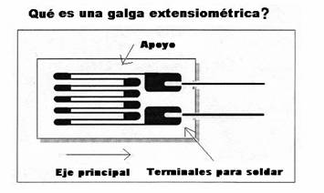
Funcionamiento- La galga se adhiere firmemente al objeto cuya deformación se desea medir mediante un adhesivo especial
- Cuando el objeto se deforma, la lámina metálica también lo hace
- Esta deformación provoca un cambio en la resistencia eléctrica de la lámina
- La variación de resistencia se mide mediante un circuito electrónico, generalmente un puente de Wheatstone
- El cambio de resistencia es proporcional a la deformación del objeto
Aplicaciones
- Medición de tensiones en estructuras metálicas y de hormigón
- Sensores de presión y fuerza
- Células de carga para básculas y sistemas de pesaje
- Análisis de esfuerzos en componentes mecánicos
- Monitorización estructural en ingeniería civil
Sensor piezoeléctrico
Los sensores piezoeléctricos se basan en el fenómeno de la piezoelectricidad, descubierto en 1880. La piezoelectricidad (del griego piezo, "estrujar o apretar") es la propiedad que tienen ciertos materiales cristalinos de generar un voltaje eléctrico cuando se les somete a tensiones mecánicas.
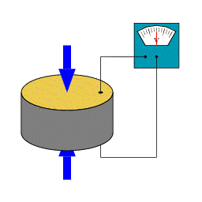
Lo más interesante es que el efecto es reversible: estos materiales también se deforman cuando se les aplica un campo eléctrico, lo que permite utilizarlos tanto como sensores como actuadores.
Funcionamiento
- Al aplicar una fuerza sobre el material piezoeléctrico, los centros de gravedad de las cargas eléctricas se desplazan
- Esta disociación genera dipolos elementales en la masa del material
- Como resultado, aparecen cargas de signo opuesto en las superficies enfrentadas
- Estas cargas producen una diferencia de potencial (voltaje) medible
Materiales piezoeléctricos
- Naturales: cuarzo, turmalina
- Ferroeléctricos: tantalato de litio, nitrato de litio, cerámicas polarizadas
Aplicaciones
- Micrófonos
- Sensores de impacto y vibración
- Generadores de ultrasonido
- Encendedores (chispa)
- Sensores de rotación para sistemas de control de estabilidad
Tubo Bourdon
El manómetro o tubo de Bourdon es un dispositivo desarrollado y patentado en 1849 por el ingeniero francés Eugène Bourdon, diseñado específicamente para medir presión.
En su forma más simple, consiste en un tubo metálico aplanado que forma una sección circular de aproximadamente 270°. Un extremo del tubo está sellado y libre para desplazarse, mientras que el otro extremo está fijo y conectado a la cámara o conducto donde se debe medir la presión.
Funcionamiento
- Cuando la presión en el sistema aumenta, el tubo tiende a desenrollarse
- Cuando la presión disminuye, el tubo tiende a curvarse más
- Este movimiento se transmite mediante una conexión mecánica a un sistema de engranajes
- Los engranajes están conectados a una aguja indicadora que señala el valor de presión en una escala calibrada
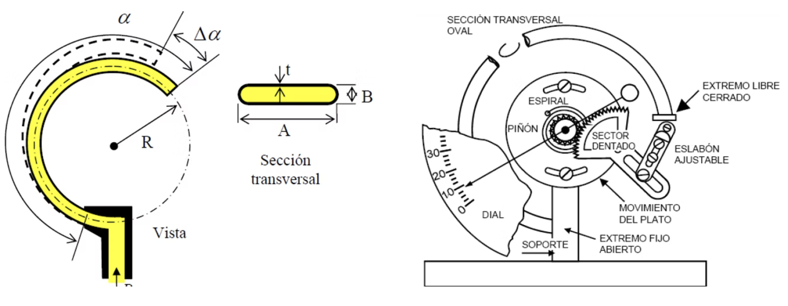
Aplicaciones
- Manómetros industriales
- Medición de presión en sistemas hidráulicos y neumáticos
- Instrumentación para calderas y compresores
- Equipos médicos (tensiómetros mecánicos)
Movimiento
Radar
RADAR es un acrónimo de Radio (Aim) Detecting And Ranging, que podría traducirse como "detección y medición de distancia por radio". Se trata de un sistema que utiliza pulsos de energía electromagnética para detectar objetos y determinar su posición y velocidad.
El principio del radar es similar al de la reflexión de ondas sonoras (eco), pero utilizando ondas electromagnéticas:
- El transmisor emite pulsos de energía electromagnética de radiofrecuencia (RF)
- Esta energía se propaga en el espacio
- Cuando encuentra un objeto, parte de la energía es reflejada hacia la fuente
- Un receptor capta esta energía reflejada (llamada "eco")
- Analizando el tiempo entre la emisión y la recepción, se puede determinar la distancia al objeto
Aplicaciones
- Control de tráfico aéreo
- Navegación marítima
- Meteorología (detección de precipitaciones)
- Sistemas de seguridad y vigilancia
- Control de velocidad en carreteras
Sensor de presencia por infrarrojos (PIR)
El sensor PIR (Passive Infrared - infrarrojo pasivo) es un dispositivo electrónico diseñado para detectar movimiento basándose en la medición de radiación infrarroja.
Principio físico
Todos los cuerpos, vivos o no, emiten una cierta cantidad de energía infrarroja, mayor cuanto más alta es su temperatura. Los dispositivos PIR son capaces de detectar cambios en los patrones de esta radiación infrarroja.
El sensor PIR consta de:
- Un elemento sensor piroeléctrico dividido en dos campos
- Un circuito comparador que mide la diferencia entre ambos campos
- Una óptica especial (lente de Fresnel) que divide el espacio en zonas
Cuando los dos campos reciben la misma cantidad de radiación, la señal eléctrica resultante es nula. Pero cuando un objeto en movimiento atraviesa el campo de visión, se genera una diferencia en la radiación detectada por cada campo, produciendo una señal eléctrica que el circuito interpreta como movimiento.
Aplicaciones
- Sistemas de seguridad y alarmas
- Iluminación automática
- Ahorro energético en edificios
- Domótica (automatización del hogar)
- Juguetes y aplicaciones interactivas